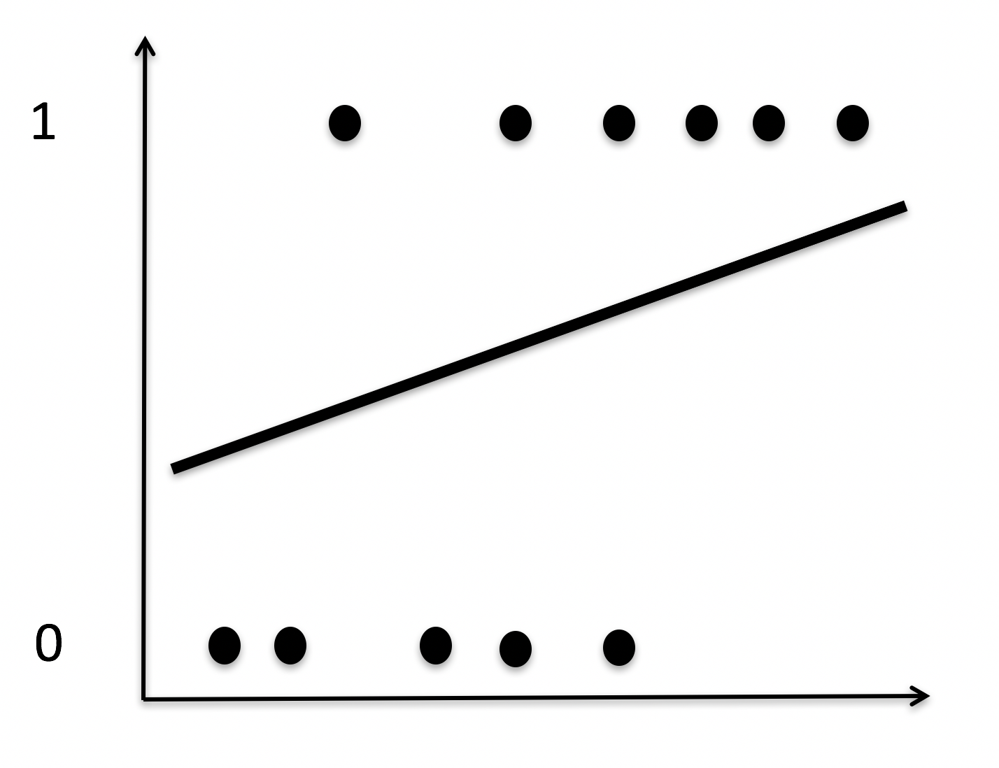

exp(1)[1] 2.718282We’ve had continuous IVs (regression)
We’ve had categorical IVs (factorial ANOVA)
We’ve had a mixture of continuous/categorical IVs (more regression)
But we’ve never had a DV variable that is categorical… in comes Logistic Regression
When we have a continuous DV, we can… - Calculate the \(R^2\) and determine if our IVs & DV are correlated (large value implying = large effect)
Calculate a \(p\)-value to determine if \(R^2\) (or our model) is statistically significant
Use the line/slope of a linear regression to make a calculated prediction of y given x
Compare models
Add in predictors & look at interactions
What is the goal of prediction when you have a categorial (dichotomous) outcome?
We are trying to see if something is TRUE or FALSE
RLearning goals today are not: - know every little thing about odds/probabilities/weird things I’m going to introduce - know every element of the output - memorize anything
Used when your DV is binary (0,1)
- Clinical diagnosis
- Disease prevalence
- Experiences (Yes/No) - Correct/Incorrect
The mean of the distribution is the same as the proportion of 1’s in the distribution. - Out of 100 people, 27 have PTSD (1) and 73 do not have PTSD (0) - The mean of the distribution is .27 - Probability of getting a 1 is .27
If we plotted these points, they are either 1’s or 0’s

If we plotted our OLS regression line. It doesn’t make sense! Predicted values can go above 1 or below 0…yikes

Instead, we fit this non-linear function. None of our data fall on the line!
Logistic Regression, rather than a straight, fitted line like linear regression, logistic regression fits an S-shaped logistic function.
This curved line can tell us the probability that something will be “1” given X
…and just like linear regression, we can make simple models (a relationship between x and y, with y being a binary variable) or more complicated models (with covariates).
Unlike linear regression, it isn’t as easy to just compare a more complex model to a simple model
When our outcome is binary, we violate OLS regression assumptions
Violates:
Correctly specified form (not linear)
Homoscedasticity (as probability approaches 1 or 0, variance approaches 0)
Normality of the errors (lol not close)
If we use OLS, we violate assumptions and have predicted values that go outside 0 & 1
How does the predicted probability of getting a 0 or a 1 relate to our predictors?
\[\hat{p}_{i} \leftrightsquigarrow b_{0} + b_{1}X_{1} + b_{2}X_{2}... b_{3}X_{p}\]
Extends the general linear model framework
Used to describe different Data Generating Processes (DGPs) other than Gaussian normal
Need to use if we cannot use the Gaussian normal e.g. the range of Y is restricted (e.g. binary, count) and/or the variance of Y depends on the mean, etc…
In other words, what is your DGP?
\[\mu_i = \alpha + \beta x_i\] - The parameters of the normal distribution are the mean μ and the standard deviation σ (or the variance \(\sigma^2\))]
\[f(p_i) = \alpha + \beta x_i\] - n stands for the number of times the experiment runs. - p represents the probability of one specific outcome.]
It is not common to have an average outcome \(\mu\) (other than in a normal distribution)
It is not common to have parameters range from negative to positive infinity.
We need something that translates our model into the parameters that describe the distribution.
\[y_i \sim Binomial(n, p_i)\]
\[f(p_i) = \alpha + \beta x_i\]
Our number of trials is \(N\), so we are predicting the probability of \(y\). Probabilities are bounded between zero and one.
Because our variables are not in probability units we need to “link” them via a function. The linear right side of the equation is not in the same units as the non-linear left side.
Two most popular are logit and log. Others are available too, such as probit.
We need to map (0,1) to \((-\infty, \infty)\)
Logistic regression uses the logistic function to link the predicted probabilities to the predictors
Think of it as a transformation of \(\hat{Y}\)s
\[f(x) = \frac{1}{1+e^{-X}}\]
… where \(e\) is Euler’s number
exp(1)[1] 2.718282The y-axis is the “rolling mean” of the DV (or the proportion of 1’s). This logistic curve relates \(X\) (the IV) to our \(P(\bar{Y})\)

For the Sigmoid function, as x approaches \(\infty\), it reaches a natural limit at 1.
As x approaches \(-\infty\), it reaches a natural limit of 0
This all keeps the limits within the 0, 1 range.
\[f(x) = \frac{1}{1+e^{-X}}\] \[\hat{p} = \frac{1}{1+e^{-b_{0}+b_{1}X}}\] - The form of the logistic function is still nonlinear (because probabilities can only range from 0 to 1)
Since it’s nonlinear, \(b\) can’t be interpreted as easily as we’ve been doing with OLS regression.
So in order to interpret our model parameter, we need to convert to odds
where P is the probability of a 1 (the proportion of 1s, the mean of Y), e is the base of the natural logarithm (about 2.718) and a and b are the parameters of the model. The value of a yields P when X is zero, and b adjusts how quickly the probability changes with changing X a single unit (we can have standardized and unstandardized b weights in logistic regression, just as in ordinary linear regression). Because the relation between X and P is nonlinear, b does not have a straightforward interpretation in this model as it does in ordinary linear regression
\[probability= \frac{\hat{odds}}{1+\hat{odds}}\]
Put simply:
The odds being so asymmetrical (unlike probability) make it difficult to compare the odds of being 0 versus the odds of being 1. So we use something called log odds.
Taking the log of the odds solves this problem by making everything symetrical!
Odds are 1 to 6:
Odds are 6 to 1:
\[f(x) = \frac{1}{1+e^{-X}}\] \[\hat{p} = \frac{1}{1+e^{-b_{0}+b_{1}X}}\]
\[odds = \frac {\hat{p}}{1-\hat{p}}=e^{b_{0}+b_{1}X}\] \[logit= Log(odds)=ln(\frac{\hat{p}}{1-\hat{p}}) = b_{0}+b_{1}X\]
\[logit= Log(odds)=ln(\frac{\hat{p}}{1-\hat{p}}) = b_{0}+b_{1}X\] - DV is a logit, the natural log of odds
Predicted scores are not dichotomous
Instead of predicting probabilities directly, we are instead predicting the log of the odds.
The regression we are used to is not predicting \(\hat{Y}\), because we’re predicting (or relating our IV) logits
In order to get the probability of a value of X being 1 or 0 based on some model parameters ( \(b_0\), \(b_1\) etc. ), we rearrange our equation so that we actually get the predicted logit (log of odds) given our model parameters.
How the hell do you interpret a logit? Not easily…
Convert back into odds
Convert your odds back into probabilities
Does this seem convoluted?
We are predicting logits, which happen to be the log of odds. It’s bananas.
How do we get these numbers in the first place? Can we use OLS?
OLS minimizes the errors ( \(SS_{res}\)), which maximizes ( \(SS_{reg}\))
In logistic regression we are not so lucky
Need to rely on iterative procedure, Maximum Likelihood (ML) Estimation:
Do any of you hike? Know how to read a topographic map?
ML Estimation is sort of like going hiking with your data to find the highest point. And most of the time you can!
But if if you take a wrong turn, you might get screwed. It’s the risk we take when using ML Estimation!
We are using the distribution of the data to find the location that maximizes the likelihood of observing the variable that we measured.
We are essentially trying to find the optimal value for the mean (or standard deviation) for a distribution given our observed data.
We are talking here about the mean of the distribution, not the mean of the data. (However, in a normal distribution, these are the same thing.)
So we get model parameters, estimated via MLE (instead of OLS)
Same but different:
Asymptotic standard errors (an approximation to the standard error)
Interpret test statistics as \(z\)’s, not \(t\)’s
No \(t\)-tests; instead a Wald test = \(\chi^2\) test with 1 df = \((\frac{coef}{se})^2\)
asymptotic se’s are just approximations since we finite-sample dist of the estimator isn’t known
glm(formula,
family = gaussian(link="identity"), #<<
data,
weights,
subset,
na.action,
start = NULL,
etastart,
mustart,
offset,
control = glm.control(...),
model = TRUE,
method = ”glm.fit”,
x = FALSE,
y = TRUE,
contrasts = NULL, ...)The family argument specifies the distribution. In R, families have default links.

glm(y ~ X1+ X2 + X3 , #<<
family = binomial,
data = dataset)Specify the model like you would with lm
glm(y ~ X1+ X2 + X3 ,
family = binomial, #<<
data = dataset)Specify the distribution you’re working with. When binary outcomes, we’ll use the binomial.
glm(y ~ X1+ X2 + X3 ,
family = binomial,
data = dataset) #<<Specify your dataset.
\(b_1\) is the predicted change in the logit for a 1-unit change in X, holding the other predictors constant
For a 1-unit change in X, holding other predictors constant, the odds that Y = 1 changes by \(e^{b_{1}}\)
For fitted values, need to use entire equation \(\hat{Y} = e^{b_{0}+b_{1}X_{1}}\)
Turn to probabilities by: \(\frac{\text{odds}}{(1 + \text{odds})}\)
# 1 = not premature
mortality# A tibble: 300 × 4
Intelligence_Self Intelligence_Mate premature.d NOT.premature
<dbl> <dbl> <fct> <dbl>
1 22 19 normal 1
2 22 18 normal 1
3 21 21 normal 1
4 22 17 normal 1
5 19 18 normal 1
6 19 20 premature 0
7 16 18 normal 1
8 15 11 premature 0
9 16 21 normal 1
10 19 22 normal 1
# ℹ 290 more rowsdeath.1 <- lm(NOT.premature ~ Intelligence_Self , data = mortality)
summary(death.1)
Call:
lm(formula = NOT.premature ~ Intelligence_Self, data = mortality)
Residuals:
Min 1Q Median 3Q Max
-0.9030 0.1084 0.1538 0.1907 0.3355
Coefficients:
Estimate Std. Error t value Pr(>|t|)
(Intercept) 0.641769 0.098636 6.506 3.25e-10 ***
Intelligence_Self 0.011357 0.005807 1.956 0.0514 .
---
Signif. codes: 0 '***' 0.001 '**' 0.01 '*' 0.05 '.' 0.1 ' ' 1
Residual standard error: 0.3745 on 298 degrees of freedom
Multiple R-squared: 0.01267, Adjusted R-squared: 0.009362
F-statistic: 3.826 on 1 and 298 DF, p-value: 0.05141death.2 <- glm(NOT.premature ~ Intelligence_Self , data = mortality)
summary(death.2)
Call:
glm(formula = NOT.premature ~ Intelligence_Self, data = mortality)
Coefficients:
Estimate Std. Error t value Pr(>|t|)
(Intercept) 0.641769 0.098636 6.506 3.25e-10 ***
Intelligence_Self 0.011357 0.005807 1.956 0.0514 .
---
Signif. codes: 0 '***' 0.001 '**' 0.01 '*' 0.05 '.' 0.1 ' ' 1
(Dispersion parameter for gaussian family taken to be 0.1402466)
Null deviance: 42.330 on 299 degrees of freedom
Residual deviance: 41.793 on 298 degrees of freedom
AIC: 266.05
Number of Fisher Scoring iterations: 2death.3 <- glm(NOT.premature ~ Intelligence_Self,
family = binomial, data = mortality)
summary(death.3)
Call:
glm(formula = NOT.premature ~ Intelligence_Self, family = binomial,
data = mortality)
Coefficients:
Estimate Std. Error z value Pr(>|z|)
(Intercept) 0.28695 0.67490 0.425 0.6707
Intelligence_Self 0.08012 0.04143 1.934 0.0532 .
---
Signif. codes: 0 '***' 0.001 '**' 0.01 '*' 0.05 '.' 0.1 ' ' 1
(Dispersion parameter for binomial family taken to be 1)
Null deviance: 273.53 on 299 degrees of freedom
Residual deviance: 269.75 on 298 degrees of freedom
AIC: 273.75
Number of Fisher Scoring iterations: 4For a 1-unit change in X, holding other predictors constant, the odds that Y = 1 changes by \(e^{b_{1}}\)
exp(1)^.08012[1] 1.083417For every 1-unit increase in Intelligence, the odds of not having a premature death 8%
What if you want the probability of being a premature death for a given level of Intelligence? (Now that we’ve run our model and have parameters…)
For fitted values, need to use entire equation \(\hat{Y} = e^{b_{0}+b_{1}X_{1}}\)
# get fitted value with a given value of X (here 20)
exp(1)^(0.28695 + (.08012*20))[1] 6.615067# now get odds
6.615067 / (1+6.615067)[1] 0.8686814We can have different link functions. When your response variable (DV) is truly binary – the data generating process generates legit binary data – logit is your pick.
What if your response variable is binary, but the underlying construct you are trying to measure is likely Gaussian? Ex: depressed vs. not depressed. But the underlying latent construct is continuous. More appropriate then is the probit link function.
death.4 <- glm(NOT.premature ~ Intelligence_Self,
family = binomial(link = "probit"), data = mortality)
summary(death.4)
Call:
glm(formula = NOT.premature ~ Intelligence_Self, family = binomial(link = "probit"),
data = mortality)
Coefficients:
Estimate Std. Error z value Pr(>|z|)
(Intercept) 0.21961 0.38376 0.572 0.5671
Intelligence_Self 0.04513 0.02319 1.946 0.0516 .
---
Signif. codes: 0 '***' 0.001 '**' 0.01 '*' 0.05 '.' 0.1 ' ' 1
(Dispersion parameter for binomial family taken to be 1)
Null deviance: 273.53 on 299 degrees of freedom
Residual deviance: 269.72 on 298 degrees of freedom
AIC: 273.72
Number of Fisher Scoring iterations: 4